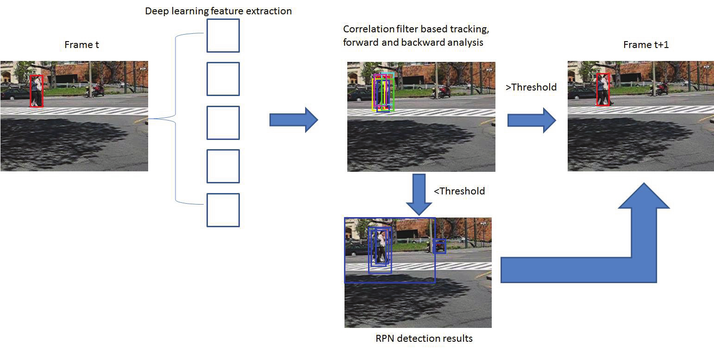
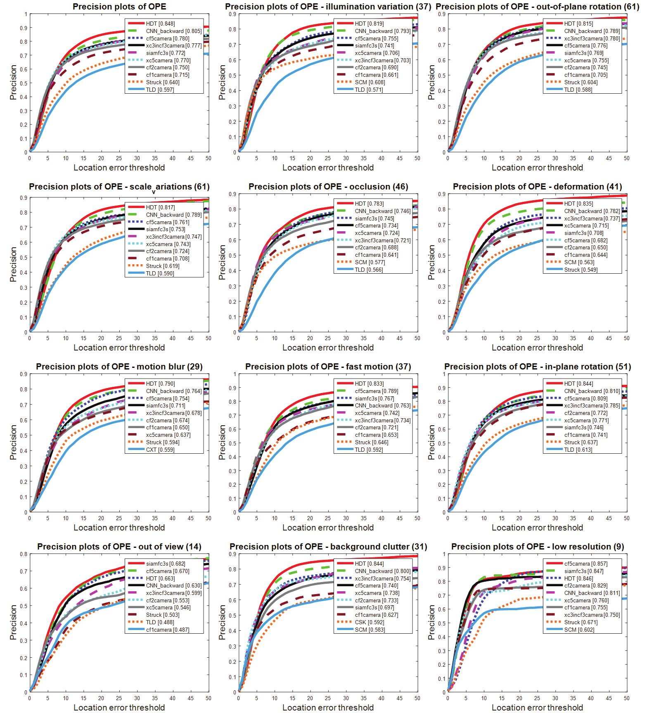
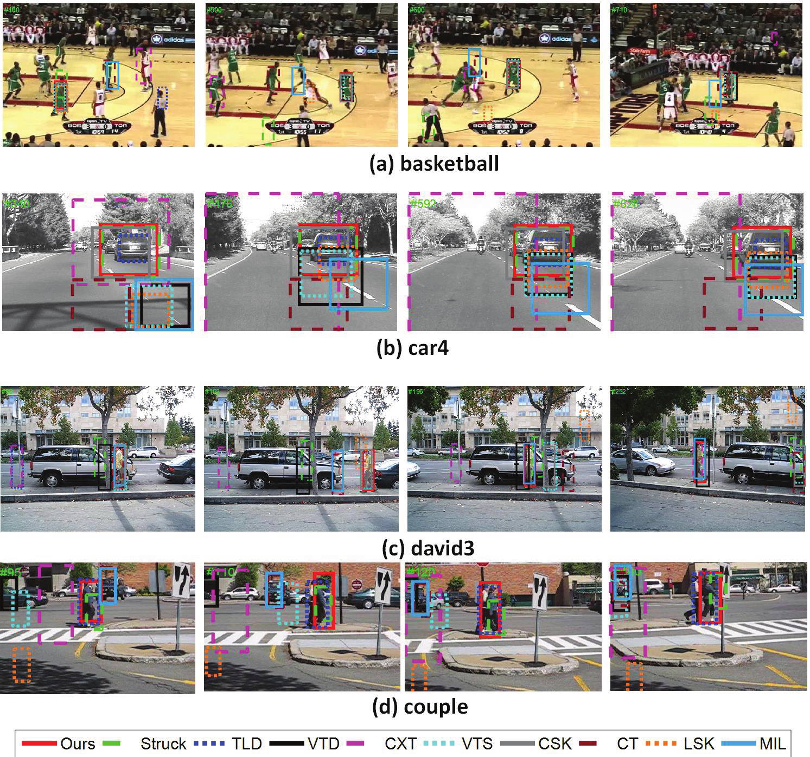

Visual Object Tracking
| Yong Wang, Robert Laganiere University of Ottawa Ottawa, ON, Canada |
Daniel Laroche, Changyun Zhu, Xiaoyin Xu, Ali Ors NXP Semiconductors Ottawa, ON, Canada |
|---|---|
| Questions? Drop us a line | |
Overview
In this paper, we exploit convolutional features extracted from multiple layers of a pre-trained deep convolutional neural network. The outputs of the multiple convolutional layers encode both low-level and high-level information of targets. The earlier convolutional layers provide accurate positional information while the late convolutional layers are invariant to appearance changes and provide more semantic information. Specifically, each convolutional layer locates a target through correlation filter-based tracking and then traces the target backward. By analyzing the pair of the forward and backward tracking, we evaluate the robustness of the tracker in each layer. The final position is determined by fusing the location of each layer. A region proposal network (RPN) is employed whenever the backward tracker failure occurs. The new position will be chosen from the proposal candidates generated by the RPN. Extensive experiments have been implemented on several benchmark datasets. Our proposed tracking method achieves favorable results compared to state-of-the-art methods
Our work was accepted to the 13th International Symposium on Visual Computing
Algorithm Overview
An overview of our proposed tracking algorithm is given in Fig. 1. It consists of four components. First, deep CNN features are extracted from different layers using the pre-trained VGG19-Net [11]. Then each layer from the CNN predicts the new target position based on correlation filters [5]. Next, backward tracking is employed to compute the overlap score which is used to measure the quality of the tracker. The score is used to fuse the final tracking position from different layers. If the score is higher than a threshold, the final target position is obtained by fusing the tracking positions from the different network layers. Otherwise, the correlation filter is used to locate the final results from candidate proposals which are generate by the RPN. In the following, we give a detailed description of the backward tracking and RPN models.

Performance
We evaluate the run-time performance of our final model on a 681x227 input image on 3 different systems:

Demo
We evaluate the run-time performance of our final model on a 681x227 input image on 3 different systems:

Navigation
Industry Partners
Thank you to NXP Semiconductor for making this work possible!